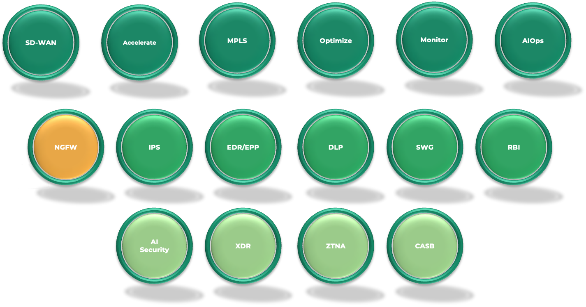

Why this matters
Nobody signs one contract for "the network". They sign an MPLS carriage contract, a router refresh, a firewall renewal, a VPN concentrator support agreement, an SWG licence, a CASB subscription, a DLP add-on and an SD-WAN overlay — each from a different vendor, on a different anniversary, managed in a different console by whoever holds that vendor's certification. Every one of those lines looks defensible on its own. Together they are the most expensive way to run a WAN.
The TCO argument here is deliberately structural, not numeric: you don't need a spreadsheet of assumed percentages to see that fewer boxes mean fewer refreshes, fewer renewals mean fewer negotiations, and fewer consoles mean fewer specialists, fewer integration points and faster triage. The objective is simple: collapse the estate into one platform, one policy model, one console — and make the operational maths self-evident.
The estate you're actually paying for
Ask a prospect to sketch their WAN and security stack and the whiteboard fills up fast: MPLS circuits, edge routers, branch firewalls, VPN concentrators for remote access, a secure web gateway, CASB and DLP point products layered over the top, and an SD-WAN overlay bought to soften the MPLS bill. The invoices are only half the story.
The costs you can see
- MPLS carriage and per-site circuit contracts
- Hardware refresh cycles — routers, firewalls, concentrators
- Licence renewals and support contracts, one per vendor
- An SD-WAN overlay subscription bought on top of it all
The costs that hide
- Integration engineering to make the vendors coexist
- Patch windows multiplied across every appliance family
- Outage triage across vendors — everyone's dashboard is green
- A skills gap (and training budget) per console
- Audit evidence stitched together from different log formats
"How many renewal dates does your network and security estate have in the next 24 months — and how many consoles does one investigation touch, end to end?" Almost nobody knows the first number without going away to count. That is the finding: the estate has grown past the point where anyone can see its whole cost.
Collapse the stack into one platform
Cato converges SD-WAN and the security service edge into a single cloud service: every flow is inspected once, in a single pass, at the nearest PoP. At the branch, a Socket replaces the router-plus-firewall pair. The global private backbone replaces MPLS. The Cato Client replaces the VPN concentrator. SWG, CASB, DLP and IPS stop being products you deploy and become policy you enable. And all of it — network and security — is configured, monitored and audited in one console, the Cato Management Application (CMA).
What you retire → what replaces it
| What you retire | What replaces it | What changes operationally |
|---|---|---|
| MPLS circuits | Cato Global Private Backbone | Carriage becomes commodity internet uplinks; site-to-site transport rides the SLA-backed backbone — see MPLS to SASE Migration. |
| Edge routers | Cato Socket | Zero-touch edge device; routing and path policy live in CMA, not in per-box config. |
| Branch firewalls | FWaaS in the PoP | No sizing, no patch windows, no end-of-life — see Firewall Refresh to FWaaS. |
| VPN concentrators | Cato Client + ZTNA at every PoP | No head-end to scale or patch; remote users get the same policy and inspection as sites. |
| SWG / web proxy | SWG in the same single pass | No PAC files or proxy chains; web policy is just more rules in the same rule base. |
| CASB / DLP point products | Native CASB & DLP, inline | Enabling data protection is a policy toggle, not a procurement; incidents land in the same event store. |
| SD-WAN overlay | SD-WAN native to Socket + PoP | Path selection, QoS and experience analytics in the same console as security policy. |

The operational wins
Fewer renewals, one agreement
The renewal calendar collapses into a single conversation. Architecture decisions stop being driven by whichever contract expires next.
One audit trail
Every network and security change — who, what, when — is logged in CMA's Audit Trail. Audit evidence comes from one system, in one format.
One upgrade cadence, PoP-side
New capabilities and fixes land in the PoPs, maintained by Cato. Sockets stay thin and cloud-managed — the appliance EOL treadmill simply ends.
Capability by policy, not hardware
Adding IPS, CASB or DLP is a toggle in the console on traffic already flowing through the PoP — no new box, console or skills hire.
Consolidation conversations rarely start abstract — they start when a firewall estate goes end-of-life or the MPLS contract comes up. Anchor to that event, then widen the lens: replace the one renewal in front of them, and every adjacent renewal becomes optional.
How to run the demo
The demo is deliberately boring in the best way: no attack simulations, just showing that everything they currently run as separate products is one coherent system in one console.
-
Whiteboard their estate first
Before touching CMA, draw their stack from discovery: every box, its vendor, its console, its next renewal. Leave it visible — the rest of the demo is a running comparison against that drawing.
-
One console: network and security policy side by side
Network → Network Rules Security → Internet Firewall
Walk from bandwidth and path-selection rules straight into firewall policy without changing tools. Point out that both rule bases share the same sites, users and groups — one policy model, not an integration between two products.
-
Topology: the whole estate on one map
Monitor → Topology
Show sites on Sockets (London DC on an X1500, Bristol Office, Madrid Office), cloud presence (an AWS vSocket site (eu-west-2) as an HA pair, the Azure vSocket hub) and remote users on the Client — all live, in one view. Contrast with the per-vendor dashboards on the whiteboard.
-
Add a security capability without deploying anything
Security → IPS
Show IPS (or CASB / DLP) enabled by policy on traffic already flowing through the PoP. The line that lands: "in your current estate, this capability is a purchase order, a box, a console and a renewal — here it's a toggle."
-
One audit trail across everything
Administration → Audit Trail
Filter recent changes — a network rule edited by Marcus, a firewall rule added by Priya — all attributed in one place. This is the single audit story their current estate can't tell without stitching logs from every vendor.
-
Close on lifecycle: the treadmill ends
Explain the upgrade model: security capabilities update PoP-side, maintained by Cato; Socket firmware is pushed from the cloud on the customer's schedule. No sizing exercise, no forklift refresh, no end-of-life notice — then hand over the firewall refresh page as the follow-up.